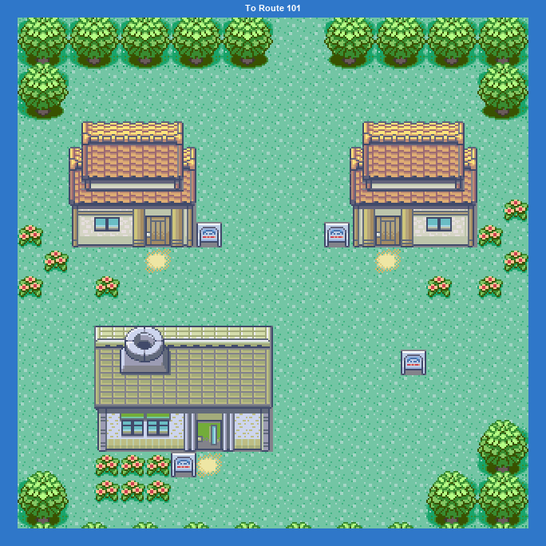
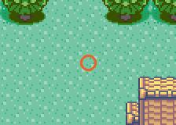
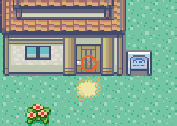
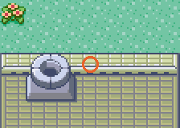

PokémonEMMA'S EMERALD
OFFICIAL Strategy Guide
Littleroot Town
TIP
No wild Pokémon in the grass here. Time of day: M = morning (6–10), D = day (10–19), E = evening (19–20), N = night (20–6).
Event 1: Moving in

The moving truck drops you in Littleroot. Before it does, the game asks whether to skip the intro, which difficulty you want (Easy, Normal or Hard) and whether to randomize Pokémon. Skipping the intro sets the clock, meets the rival and drops you on the north path.
Event 2: Your house

MOM heals your team any time you visit. Later she asks for a battle of her own when you come home with 2, 5 and 8 badges, and hosts the family dinner battle once UNCLE and UNC G have been dealt with.

Event 3: Prof. Birch's lab

Empty for now. After Route 101 you come back here to get the Pokédex and Poké Balls.
55